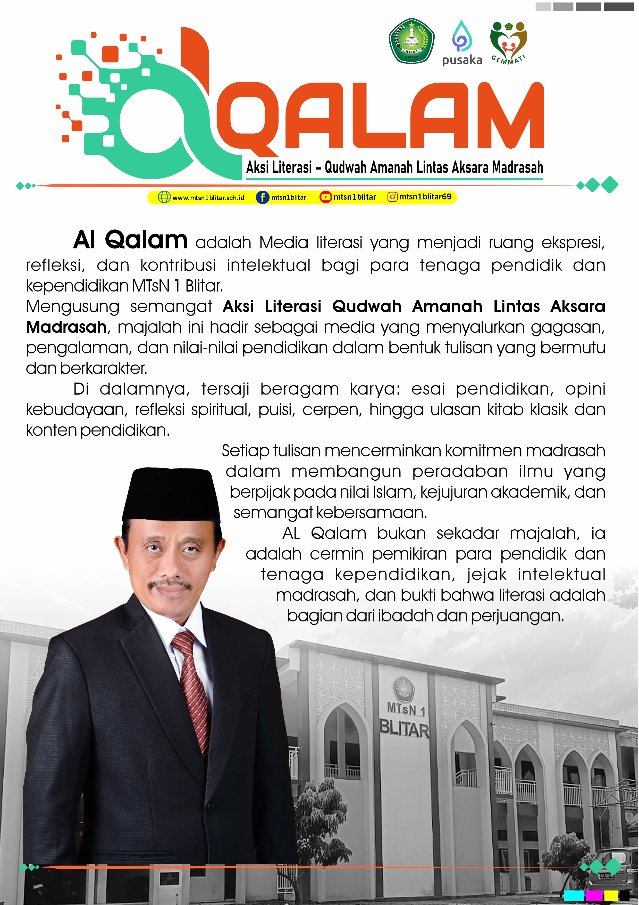
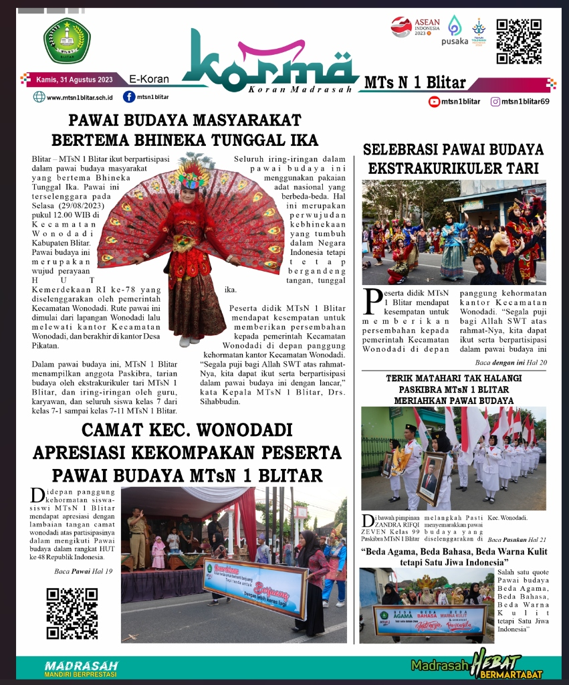
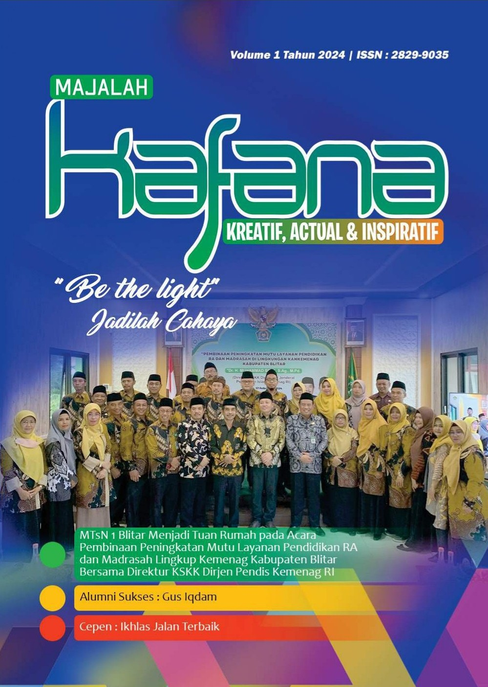

Sentuh atau klik sampul publikasi di bawah ini untuk membuka lembaran koran dan buletin dalam format 3D Flipbook interaktif beresolusi tinggi.

Aksi Literasi Qudwah Amanah Lintas Aksara Madrasah
Koran digital ukuran A3 menyajikan wacana literasi, berita prestasi siswa, opini guru, serta khazanah islami madrasah.

Koran Madrasah MTsN 1 Blitar
Publikasi berita aktual madrasah, aktivitas ekstrakurikuler, liputan kegiatan akademik, dan karya orisinal civitas madrasah.

Kajian Faktual, Aktual, & Narasi Literasi
Buletin tematik MTsN 1 Blitar yang menghimpun gagasan ilmiah, esai keagamaan, rubrik sastra, dan ulasan mendalam.
Masukkan PIN untuk membuka kelola arsip & publikasi
Buka edisi koran lain atau unggah/hapus file PDF publikasi ini
Pilih gambar JPG/PNG baru untuk sampul di rak koran
Gabungkan semua file PDF di server menjadi satu buku koran utuh dari halaman awal sampai akhir.
pdf/alqalam/
Pilih format unduhan PDF yang ingin Anda simpan ke komputer / HP
Gabungkan semua halaman koran aktif ke dalam 1 file PDF A3 utuh siap cetak.
Unduh file asli edisi yang sedang Anda buka saat ini
Menyiapkan halaman koran A3 resolusi tinggi...
Dokumen PDF A3 Anda akan langsung dibuka dalam format 3D Flipbook interaktif!